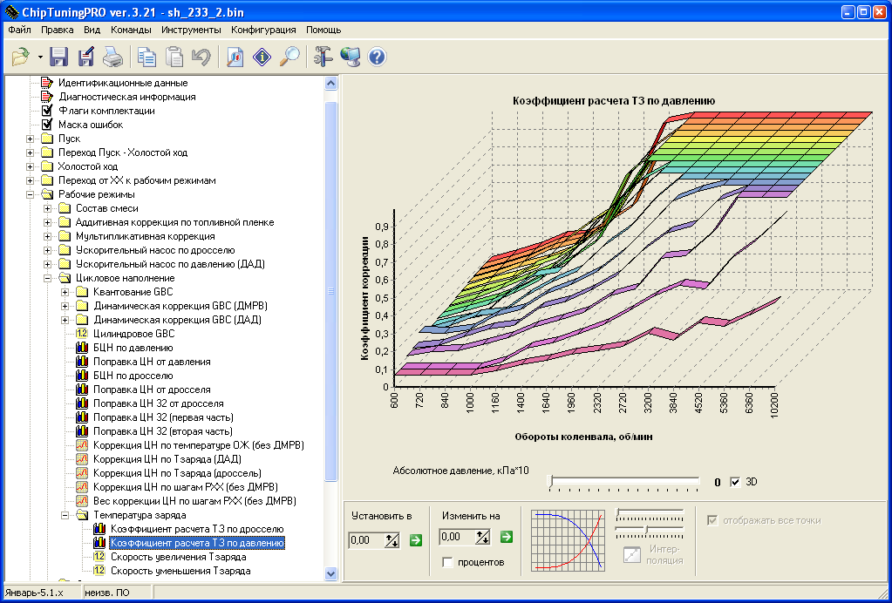
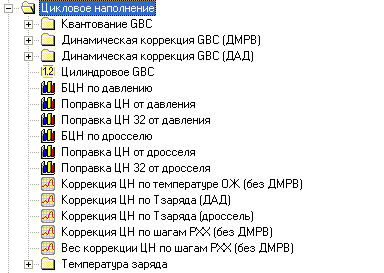
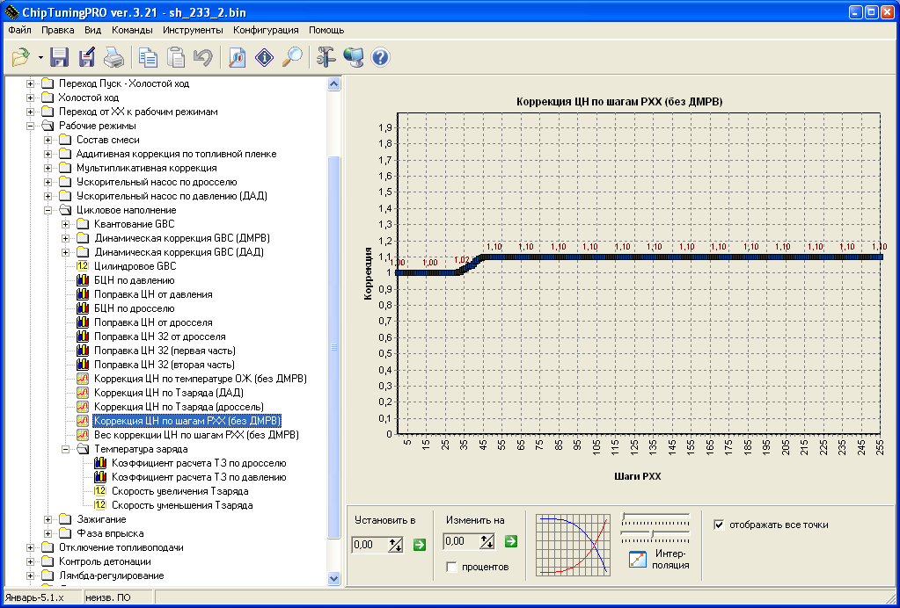
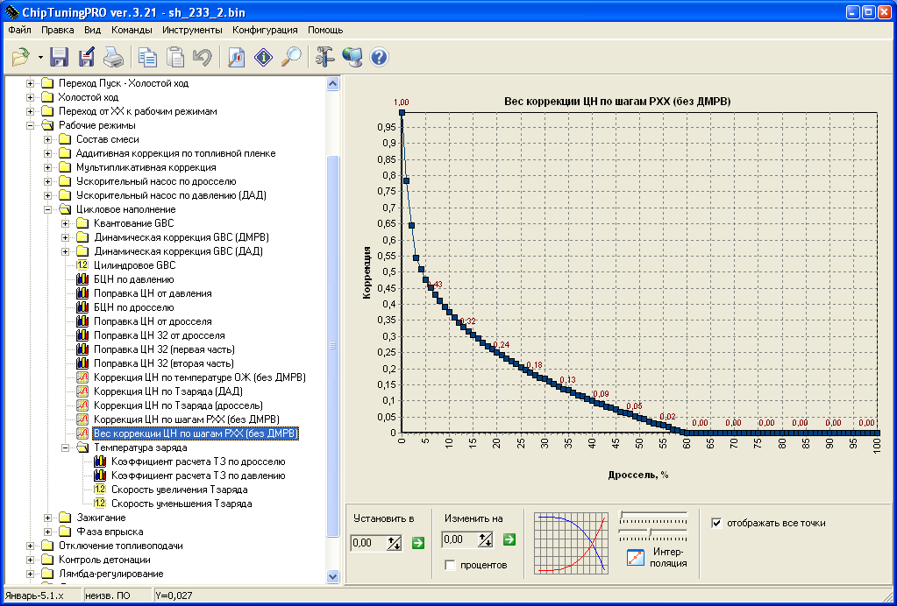
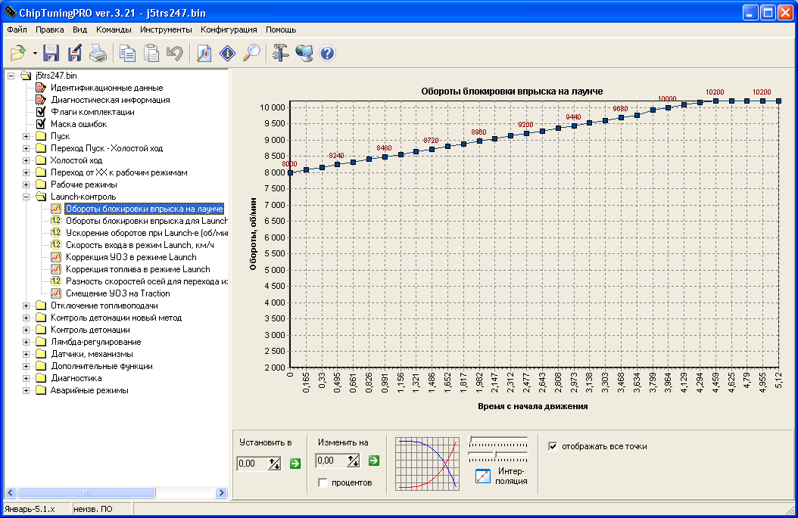
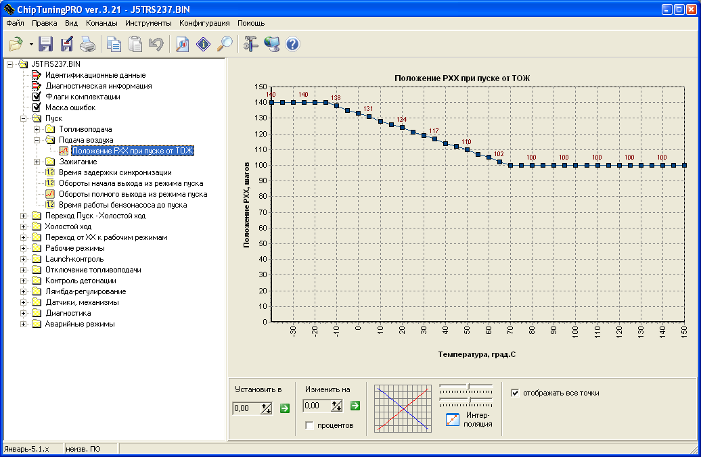
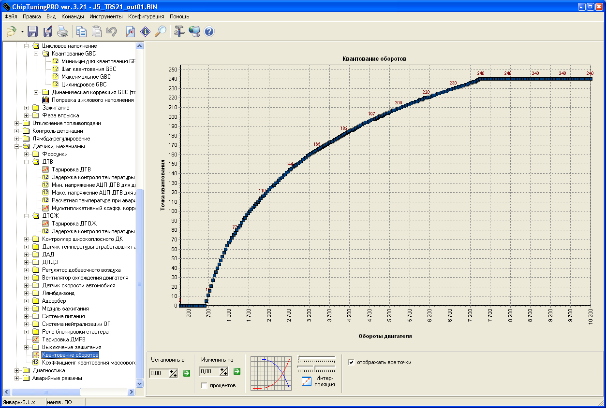
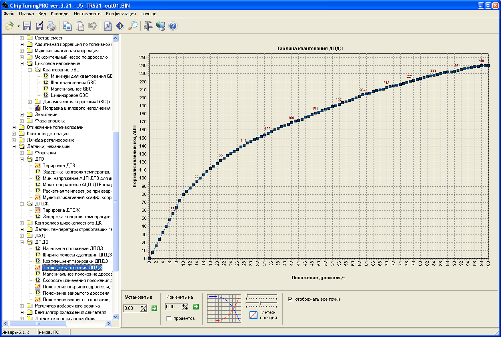
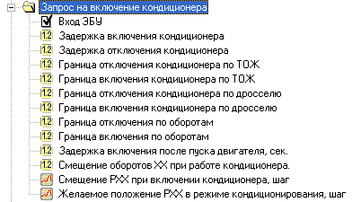

Прошивка.
Введение.
Необходимость в создании прошивки возникло по двум причинам. Первое, это когда пришло понимание, что существующие алгоритмы не в состоянии достаточно точно математически отобразить модель двигателя. А второе, когда стало очень хотеться добавить функций к уже существующим прошивкам.
Описание алгоритмов работы
Итак за основу была взята одна из ранних версий прошивки Макси РПД, которая уже существенно облегчила алгоритмию стандартных прошивок убрав из них малозначимые или экологические калибровки, которые мало требуются для спортивных моторов. Подробно о прошивках Макса можно узнать на его сайте:
http://rotorman.nm.ru/j5-sport/dad_model2.htm
Основные изменения затронули механизм расчета циклового наполнения двигателя по Датчику Абсолютного Давления (ДАД). Стандартная модель рассчитывает воздух по формуле:
GBC = FE * Vцил * P * 293 / (273 + ТВ) * К FE
процент наполнения Vцил

объем цилиндра Р
давление во впускном коллекторе ТВ
температура воздуха К
коэфф пересчета плотности
Такой алгоритм не обеспечивал точного смесеобразования в режимах малых расходов воздуха, что приводило к сильному обеднению смеси на ХХ, трудному пуску горячего двигателя. Выявлялась твердая тенденция, что с ростом Температуры Воздуха (ТВ) на впуске, смесь сильно обеднялась, при этом, если была проведена компенсация смеси, то в мощностных режимах при той же ТВ, наблюдалось сильное обогащение.

Это объясняется тем, что воздух проходя через нагретый мотор нагревается и чем меньше скорость, или объем этого воздуха, тем больше нагрев и наоборот, чем выше расход, тем меньше влияние нагретого мотора на ТВ. Полученная температура называется Температура Заряда (ТЗ). Как показано ранее ТЗ может принимать значения в диапазоне от ТВ при больших расхода воздуха, когда влияние нагретого мотора минимально, до Температуры Охлаждающей Жидкости (ТОЖ), когда поток воздуха очень мал.
Формула пересчета ТЗ выглядит следующим образом:
TЗ = ((TВ - ТОЖ) * Кпер+ ТОЖ) или по другому: = TВ * Кпер+ ТОЖ*(1- Кпер) TЗ
Температура заряда ТВ
Температура Воздуха ТОЖ - Температуры Охлаждающей Жидкости Кпер
Коэфф пересчета, принимающий значение в диапазоне 0-1 от расхода воздуха.
Если Кпер равен 1, то ТЗ принимает значение ТВ
Если Кпер равен 0, то ТЗ принимает значение ТОЖ
Проблема в том, что мы не можем использовать массовый расход воздуха в качестве опорных данных, т.к. он сам считается через цикловое наполнение и может возникнуть авторезонанс. Поэтому таблица, в которой задается Кпер определена Оборотами работы двигателя и Давлением в коллекторе для турбо мотора либо положением Дросселя, для атмосферного мотора, что достаточно достоверно определяет скорость потока и величину теплопереноса от ТОЖ к ТВ.
Тем не менее, для упрощения настройки прошивки пользователем, была выпущена версия прошивки, в которой расчет Кпер (Коэфф пересчета ТВ и ТОЖ в ТЗ) производится непосредственно в прошивке по массовому расходу воздуха и пользователю не нужно заполнять таблицу:
Кпер = AIR / AIRmax * (Kmax - Kmin) + Kmin, где: AIR
текущий массовый расход воздуха [кг/ч] AIRmax
максимальный воздух, выше которого Кпер всегда принимает значение Kmax [кг/ч].

Kmin
коэфф пересчета для нулевого расхода воздуха.
Kmax
коэфф пересчета для расхода воздуха AIRmax
Получается что при минимальном расходе воздуха, Кпер стремится к заданному коэфф Kmin, и температура заряда приближается к ТОЖ. При увеличении потока воздуха до AIRmax, коэфф Кпер стремится к Kmax, а ТЗ к ТВ. При превышении текущего расхода воздуха над AIRmax Кпер приравнивается Kmax.

Конечная формула по которой считается цикловое наполнение двигателя имеет вид:
GBC = FE * FEР* Vцил * P * 293 / (273 + ТЗ) * К * КТОЖ * КТЗ FE
процент наполнения, безразмерный [дросс][обороты] FEР
процент наполнения, безразмерный [давление][обороты] Vцил
объем цилиндра, см3 Р
давление во впускном коллекторе, КПа ТЗ

температура заряда, рассчитываемая отдельно, градС К
коэфф пересчета плотности, прописан в прошивке КТОЖ
коэфф от ТОЖ, безразмерный КТЗ
коэфф от ТЗ, безразмерный
Степень наполнения двигателя
Поправка ЦН
Процент наполнения двигателя задается таблицей Поправки ЦН. В данной версии прошивки, при работе на ДАДе, используется одновременно таблица по дросселю и давлению, при работе на ДМРВ, только поправка по Дросселю.
Поправка ЦН 16*32
Для повышения точности работы двигателя с сильно нестандартными конфигурациями, в основном с сильно
валами, а так же повышения точности смесеобразования, были реализованы таблицы поправки размерностью 16*32 точки. Одна от дросселя, другая от давления. Они используется вместо таблиц по 16*16, если стоит соответствующий флаг комплектации. Использование их в моторах, которые настраиваются на обычной поправке, не рекомендуется.
Ограничение изменения Температуры Заряда
Дальнейшие наблюдения за поведением двигателя при работе на данном методе расчета топлива, выявили, что резкие скачки расчетной ТЗ приводят к кратковременным всплескам или провалам состава смеси, причем при увеличении ТЗ смесь не надолго обеднялась, а при уменьшении, так же обогащалась. Было высказано предположение, что ТЗ не может меняться мгновенно за изменениями в работы двигателя, а на это требуется какое-то время.
Введенное в прошивку ограничение показало правильность предположения, смесь, контролируемая ШДК, перестала дергаться, и плавно следует за заданной. Для двигателя на котором проводились эксперименты, подходящими оказались значения 10 град/сек для уменьшения ТЗ и 5 град/сек для увеличения, те ТЗ остывает быстрее чем нагревается.
Калибровки, которые отвечают за расчет ТЗ, находятся в: Рабочие режимы
Цикловое наполнение
Температура Заряда.
Коррекция ЦН по шагам РХХ
При работе системы на ДАДе, отклонения давления в ресивере, вызываемые шагами РХХ не оказывают настолько незначительные, что система не замечает дополнительного притока воздуха, и смесь так же начинает уходить в сторону обеднения при открытии РХХ или в сторону обогащения, при его закрытии. Для компенсации этих явлений, была введена коррекция по шагам РХХ, с учетом открытия дросселя. Коррекция мультипликативная, те домножается на рассчитанное ранее Цикловое наполнение.
Коррекция по шагам РХХ:
В данном случае, коррекция задана только для открытия РХХ для предотвращения обеднения. Номинальным положением РХХ в котором система пребывает в нормальном состоянии на ХХ является 30 шагов. При открытии РХХ в большую сторону, ЦН будет корректироваться в повышение.
Очевидно, что с ростом положения Дросселя, влияние РХХ убывает, тк канал РХХ имеет гораздо меньшие размеры, поэтому, Коррекция по шагам РХХ, уменьшается в зависимости от % открытия дросселя.
Итоговое влияние на Цикловое Наполнение в упрощенном виде выглядит следующим образом:
ЦН = ЦН * (1 + (КорРХХ * ВесРХХ)), где: ЦН
Цикловое наполнение КоррРХХ
Коррекция по шагам РХХ ВесРХХ
Вес коррекции по шагам РХХ
Калибровки, находятся: Рабочие режимы
Цикловое наполнение
Еще раз следует отметить, что этот алгоритм работает только при расчте Циклового Наполнения по ДАДу. При ДМРВ, заданные параметры просто не учитываются.
Ускорительный насос по давлению.
По просьбе отдельных товарищей, в прошивку была введена функция расчета дополнительного топлива при скачкообразном изменении давления.
Задается нечувствительность по давлению, ниже которой дополнительное топливо не будет рассчитываться, если скачек давления выше, то разница давлений пересчитывается через экстраполирующий коэфф в дополнительное топливо и это топливо корректируется от текущих оборотов и текущего давления. Далее, если новое рассчитанное топливо больше или равно тому, что было в предыдущем цикле, то используется коэфф GTC2, если топлива меньше, то коэфф GTC1.
Так же, если в прошлом цикле было дополнительное топливо, то скачек давления меньше чем заданный в пошивке, то дополнительное топливо убывает по коэфф GTC1.
Фактически, работа ускорительного насоса по давлению, повторят собой работу ускорительного насоса по дросселю.
Калибровки, находятся: Рабочие режимы
Ускорительный насос по давлению.
Алгоритм работает совместно с алгоритмом ускорительного насоса по дросселю и отключается при отсутствии ДАДа во флагах комплектации, либо при установлении в 0 его калибровок.
Launch Control (контроль старта)
В прошивке, начиная с версий 234, задействован контроль старта автомобиля. Суть сводится контролируемому набору оборотов двигателя после начала движения, что позволяет начинать движение наиболее динамично, допуская минимальную пробуксовку.
Работа алгоритма следующая.
При скорости автомобиля ниже чем
Скорость входа в режим Launch
, отсечка двигателя выставляется на
Обороты блокировки впрыска для Launch
, это означает, что даже при полностью нажатой педали газа, обороты будут держаться на заданном уровне.
Далее, при превышении скоростного порога после отпускания сцепления, рост оборотов будет соответствовать
Ускорение оборотов при Launch
, те набор оборотов и скорости будет лимитирован, что позволит избежать резкого срыва колес в пробуксовку.
Рост оборотов будет продолжаться до наступления основной отсечки по отключению топлива и так будут оставаться равными основной отсечки во время движения, до снижения скорости менее чем нижний порог. Тогда алгоритм перевзведется заново и будет готов к следующему старту.
Если используется переменный резистор на входной ноге ЭБУ, и активирована калибровка, то
Ускорение оборотов
будет браться из соответствующей таблицы, в зависимости от положения переменного резистора.
Существует вторая версия алгоритма лаунч-контроля, которая увы несовместима в коде с первой и для нее необходима пересобирать прошивку. Суть версии в том, что обороты отсечки задаются таблицей от времени после начала движения авто.
Если используется переменный резистор на входной ноге ЭБУ, и активирована калибровка
Начальные обороты лаунча
, то обороты из таблицы будет домножаться на соответствующий коэффициент из таблицы, в зависимости от положения переменного резистора.
Для улучшения раскрутки турбины на старте применяется откат угла и коррекция топливоподачи. Обе коррекции задаются таблицами, в зависимости от оборотов до текущей отсечки. ШИМ клапан турбины работает в этом режиме по 0-й передаче. Как только движение будет начато, коррекции убираются, обеспечивая номинальный режим работы.
Traction Conrtoller (контроль тяги)
Контроль тяги реализован откатом угла в зависимости дельты ведущей и ведомой оси. Эту разницу можно считать в контроллере при установке второго датчика скорости, а можно получать с внешнего внешнего устройства, задав соответствующие параметры в
Дополнительных Входных функиях
.
Если используется второй датчик, то во флагах комплектации выставляется флаг
ДФ и ДС поменяны местами
, ДС с ведомой оси включается на вход канала ДФ
8 нога блока Я5.1, Датчик Фаз подключается на канал ДС
9 нога блока Я5.1, а датчик скорости с ведущей оси (КПП, редуктор ГП) подключается на ногу задаваемую в дополнительных входных функциях.
Переход из
реализован следующим алгоритмом. Предполагается, что после отпускания сцепления, машина уходит в сильный букс, те дельта скоростей заведомо большая. Дальше, с ростом скорости авто, эта дельта уменьшается, скорости ведомой и ведущей осей выравниваются. Как только значение дельты осей, становится меньше чем
Разность скоростей для перехода
, механизм лаунча отключается, отсечка выставляется на рабочую, а коррекцию угла уже ведет механизм трекшена.
Мягкая отсечка.
Оба алгоритма используют в качестве ограничения раскрутки мотора, так называемую мягкую отсечку, которая представляет собой вырезание искры при приближении к заданным оборотам. Вырезание начинается за 200 оборотов до заданной границы с одного такта, и дальше учащается до полного прекращения.
Дополнительные изменения алгоритмов Положение РХХ на пуске.
В новых версиях прошивки положение РХХ на пуске задается не двумя значениями с делением от температуры, а таблицей:
Повышение точности расчетов.
Выборки из всех таблиц для большей точности имеют интерполяцию, т.е. точно рассчитываются коэффициенты, которые берутся между точек.
ДАД переведен на 10 бит, что повысило точность в четыре раза и позволяет без проблем и использовать датчики с большим диапазоном, вплоть до 500 КПа.
Работа двигателя по БЦН.
В пошивке начиная с версии 234, таблица БЦН не используется для расчета ЦН в режиме работы по таблицам! Расчет топливоподачи в табличном режиме использует
Цилидровое GBC
. Их перемножение дает искомое наполнение.
Дополнительные изменения калибровок
В прошивке было произведено изменение ряда калибровок, необходимо иметь это в виду при переносе данных их штатных или более ранних прошивок.
Форсунки.
Второй ряд форсунок активируется во Флагах комплектации галкой:
При этом, 1-й ряд включается фазировано на свои штатные места, второй ряд включается попарно, 1-4 форсунка на 5-ю ногу блока Я5.1, 2-3 на 17-ю ногу. ВАЖНО! Необходимо выпаять диод, который находится в блоке на 17-й ноге!
Более не используется поцилиндровая статика форсунок. Статическая и динамическая производительность форсунок, а так же минимальное время впрыска, задается раздельно для каждого ряда. Баланс рядов задается соотношением топлива по массе. При этом второй ряд не включится, если его время впрыска меньше минимального.
Цилиндровое GBC.
Рабочие режимы
Цикловое наполнение
Цилиндровое GBC
Изменен формат калибровки! При переносе калибровок возможны неверные данные.
Значение рассчитывается как Объем цилиндра * 1,23.
Датчик скорости.
Добавлена возможность задавать число импульсов для датчика скорости. Тем самым можно использовать родные датчики на иномарках, при использовании Января.
Так же появилась возможность использовать более точный метод вычисления скорости при использовании датчиков с малым числом импульсов на 1 метр движения. В таком случае используется не подсчет числа импульсов на промежутке времени, а непосредственно захват самого импульса и вычисление времени между ними.
Для его использования необходимо установить галку во
Флагах комплектации
ДС и ДФ поменяны местами
Иподключить в проводке сигнал с ДС на канал Датчика Фаз
8 нога блока Я5.1, а Датчик Фаз подключить соответственно на канал ДС
9 нога блока Я5.1.
Имитатор расходомера топлива.
Для включения имитатора надо задать ногу на которой он будет работать. Это стало необходимо, тк нога может быть занята ШИМ выходом бустконтроллера или закиси.
Моментный РХХ.
Прошивка допускает использование Моментного РХХ, как правило это
2-х или 3-х выводные устройства, которые управляются скважностью ШИМ сигнала в противофазе. Варианты включения.
5-17 выводы - жестко задана частота работы 250 Гц.
31-36 выводы
частоту можно выбирать произвольно, как правило, хватает 90-130 Гц для нормальной работы.
Предельный ток драйвера 1А, поэтому смотрим, чтобы сопротивление обмоток МРХХ было не меньше 12 Ом. Однако, если используется двухпроводной МРХХ, то можно объединить выводные каналы, что увеличит в два раза предельный ток.

Подключается МРХХ одним выводом на
после ГР или после замка зажигания, два других вывода на 31 и 36 (5 и 17) ноги блока ЭБУ. При этом куда какая нога подбирается драйверской диагностикой. Управляя шагами РХХ, смотрим движение шторки МРХХ в нужном направлении.
Расчеты квантования
Для задания необходимых диапазонов работы калибровок прошивки, требуется правильно посчитать и занести данные о квантовании.
Квантование ДАД.
Квантование по ДАД имеет две калибровки: Минимум Квантования и Диапазон Квантования, выраженные в КПа. Врде бы все ясно из названия, поэтому просто приведу примеры расчетов.
Атмо мотор.
В качестве Минимума ставится минимальный предел датчика, как правило это 20 Кпа, ниже смысла ставить нет, тк мотор на ХХ как правило сосет где-то начиная с 28 КПа, поэтому в минимум пишем либо нижний передел, либо 20Кпа.
Диапазон рассчитывается как разность между верхним и нижними пределами. Для атмо мотора это 101 КПа, значит диапазон будет: 101
20 = 81 КПа. Это число и ставим.
Турбо мотор:
Турбо датчики ДАДа, обычно начинаются с 30 КПа, это значение и следует указать.
Диапазон зависит от того сколько собираемся дуть. Например будет дуть 1,5 бара, это 2,5 бара абсолюта или 250 КПа, значит диапазон будет: 250
30 = 220 Кпа Квантование воздуха.
Тут несколько другой принцип. Минимальное GBC задается как есть, т.е. ставится минимальным, обычно это 50 для гражданских моторов и 80-100 для спортивных, с повышенным ХХ.
А вот Шаг квантования GBC считается иначе. Примерно прикидываем, сколько воздуха пролезет в наш мотор, для атмосферного это как правило не больше 600 даже для резвых моторов, для турбо до 1200, но т.к. таблиц работающих по воздуху практически не осталось, то не имеет смысла задвигать диапазон далеко, поэтому для турбомотора ограничимся 1000 мг/цикл. В этом случае шаг будет высчитываться как:

(1000
минимум) / 256 для нашего примера: (1000
80) / 256 = 3,59375
Да, и задрав квантование в космос, необходимо так же поднять Максимальное GBC, иначе рассчитанный воздух будет просто порезан сверху.
P.S. В дальнейшем, таблицы по воздуху будут устранены полностью.
Квантование оборотов.
За квантование оборотов отвечает вот такая табличка:
Снизу отрисованы обороты, слева Точка квантования. Вкратце смысл такой, что в сетку по оборотам, которую мы видим в чиптюнере, пойдут те значения оборотов, которые соответствуют числам 16, 32, 48,
, 224, 240, те кратные 16. Вот как-то так. ;) Те обороты что превысят значение с точкой 240, будут считаться по последней точке, те по оборотам с точкой 240.
Квантование дросселя.
Тут все то же самое что и с Оборотами, где числа кратные 16 слева, такой дроссель и будет появляться в сетке чиптюнера.
Калибровки для турбомоторов.
Таблицы от давления.
Для турбомоторов задание основных коррекций по дросселю не приемлемо, т.к. при одном и том же положении заслонки, проходящий через нее воздух будет отличаться от давления, которое дает турбина, поэтому часть калибровок были переведены на зависимость от давления:
УОЗ, Состав смеси, Коррекция порога детонации, БЦН. Для того чтобы их активировать надо поставить соответствующие галки во Флагах комплектации.
Дополнительные датчики.
Начиная с 244-й версии прошивки дополнительные функции выделены в два основных раздела: входные и выходные функции.
Для любой входной функции возможен произвольный выбор ноги блока на котором будет проводиться замер АЦП, а так же метод активации, если функция работает как вкл-выкл. Эти порты имеют подпорный резистор или на
или на +5 вольт.
То же самое сделано и для выходных функций.
Для релейных, принимающих значение вкл-выкл:
И для ШИМ выходов:
Это означает, что теперь можно назначать любым функциям любые ноги блока.
Теперь описание самих функций.
Входные функции.
Запрос на включение закиси азота.
При активации заданной ноги, идет проверка на одновременное превышение порогов по оборотам, дросселю, ТОЖ си скорости движения. Если условия выполняются в течение времени задержки включения, происходит коррекция УОЗ и топливоподачи. Из расчетного угла зажигания ВЫЧИТАЕТСЯ значение взятое из таблицы. Масса тактовой топливоподачи СУММИРУЕТСЯ с добавкой из таблицы.
Так же появляется сигнал для активации релейного или ШИМ выхода, если такие заданы в выходных функциях. Если задействован ШИМ-выход, то значения коррекции УОЗ и топлива, домножаются на текущее значение
Скважность ШИМ от передачи
из выходных функций.
При отпускании кнопки или при выходе параметров за указанные границы, коррекции отменяются через время задержки выключения, сигнал для активации выходов снимается.
Запрос на включение муфты кондиционера.
Слежение за запросом на включение кондиционера от блока управления климатом или от кнопки включения кондиционера. Проверяются условия на перегрев двигателя, а так же на положения дросселя и оборотов мотора, чтобы не допустить работу кондиционера в режиме полной нагрузки, а так же исключить включение муфты на высоких оборотах. При соблюдении условий происходит разовое смещение положения шагов РХХ и текущих оборотов. Так же включается основной вентилятор двигателя. После чего дается разрешение на активацию управляющего выхода ЭБУ. Те для работы кондиционера надо включать в комплектации входные и выходные ноги одновременно.
Датчик температуры отработавших газов.
Датчик температуры отработавших газов. На данный момент возможен тока вывод в диагностику показаний температуры, без каких-либо коррекций в прошивке. Задается таблицей 256 байт, где по оси Х размещено напряжения с датчика, а по У температура с сенсора.
Ускорение при лаунче.
При подключении переменного резистора номиналом 25-30 КОм становится возможным оперативная подстройка значения
Ускорения при лаунч-контроле
из салона автомобиля без необходимости перепрошивки контроллера, для адаптации старта под конкретное покрытие.
Начальные оборот лаунча.
При подключении переменного резистора номиналом 25-30 КОм становится возможным оперативная подстройка значения
Обороты блоктровки впрыска при лаунч-контроле
из салона автомобиля без необходимости перепрошивки контроллера, для адаптации старта под конкретное покрытие.
Если же алгоритм лаунча реализован таблицей от времени после старта, то переменным резистором можно регулировать обороты из этой таблицы, путем домножения на коэффициент 0-2, задаваемый тарировкой резистора. Таким образом подгоняя всю таблицу ограничения оборотов.
Shift-Assist.
Помощник при переключении передач. Реализовано вырезание зажигания в момент выжима сцепления. При использовании данной функции, возможно переключение передач без отпускания педали газа, при этом не происходит роста оборотов, те коробка не подвергается высоким нагрузкам, а турбина, если таковая есть, не теряет набранного буста. Пороги ограничивают включение данной функции ниже заданных пределов.
Реализация возможна как кнопкой вкл/выкл, а так же датчиком давления на магистраль гидросцепления или датчиком перемещения на вилку или шток сцепления. В этом случае значения АЦП с датчика должно рости с выжимом педали.
Порог начала размыкания сцепления
- положение педали сцепления, при котором только начинается размыкание дисков при нажатии на педаль.
Порог полного размыкания сцепления
- положение педали, при котором диски сцепления полностью разжаты при нажатии на педаль.
Ниже порога
Начала размыкания
, зажигание не выключается. Выше порога
Полного размыкания
, зажигание всегда выключено, shift-assist работает. Между этими границами состояние зажигания будет в предыдущем состоянии.
Дополнительный датчик температуры.
Установка дополнительного датчика температуры позволяет корректировать ШИМ клапан бустконтроллера, включать дополнительный вентилятор, выводить в лог показания датчика.
При выходе АЦП за граничные значения, температура выставляется по аварийной калибровке.
Потенциометр буст-контроллера.
При подключении переменного резистора номиналом 25-30 КОм становится возможным оперативное изменение процента открытия соленоида наддува для подстройки желаемого давления наддува непосредственно без перепрошивки блока ЭБУ. Задается таблицей со значениями 0-2 от АЦП вывода. При работе бустконтроллера значение этой таблицы будет перемножаться на
Базовый процент открытия клапана
.
Корректор закиси.
При подключении переменного резистора номиналом 25-30 КОм становится возможным оперативное изменение процента открытия соленоида закиси для подстройки желаемой подачи непосредственно без перепрошивки блока ЭБУ. Задается таблицей со значениями 0-2 от АЦП вывода. При работе ШИМа закиси значение этой таблицы будет перемножаться на
Скважность ШИМ от передачи
.
Контроллер ШДК.
В прошивке возможно подключение ШДК по аналоговому выходу и использование его для регулирования смеси в широком диапазоне. При этом, все параметры регулирования берутся из таблиц ДК-регулирования как для обычного ДК. Для сглаживания показаний датчика используется линейный фильтр, коэффициент которого задается в калибровках.
Второй ДС (ведущая ось).
Задается второй, ведущий, датчик скорости, для использования алгоритма трекшен контроллера. Так же необходима галка во Флагах комплектации
ДС и ДФ поменяны местами
.
Дифферент скоростей.
Для работы алгоритма трекшен-контроллера можно так же использовать внешнее устройство, которое выдает, в виде аналогового сигнала 0-5 вольт, разницу между скоростями ведущей или ведомой оси.
Датчик ускорения.
Работы в этом направлении ведутся.
Выходные функции.
Реле блокировки стартера.
Для предотвращения поломки стартера на запуске, когда двигатель уже завелся, введены ограничения на время работы и предельные обороты двигателя. При превышении этих значений, выход на реле стартера блокируется.
Насос ГУРа.
С ростом скорости необходимо уменьшать воздействие гидроусилителя на руль. Тако возможно если насос ГУР снабжен управляемым по ШИМ клапаном, или используется Электро-ГУР.
Значения скважности ШИМа задаются от скорости движения авто по 8 точкам с интерполяций результатов между ними.
Второй вентилятор охлаждения.
Включение вентилятора может быть задано одним из трех датчиков: ТОЖ, ТВ или дополнительный датчик температуры.
Впрыск закиси азота.
Исполнительная функция для использования закиси азота. Активируется только в случае прохождения проверок входной функции. ШИМ выход задается от включенной передачи, позволяет дозировать дополнительную мощность. Для предотвращения резкого увеличения мощности, рост скважности ШИМа ограничен калибровкой
Шаг изменения ШИМ после активации
. Релейный выход работает как вкл/выкл.
ShiftLight
лампа отсечки.
Срабатывает при одновременном удовлетворении условий и по оборотам и по дросселю. Обороты при этом задаются от включеной передачи
Соленоид наддува
Начало работы ШИМ клапана задается калибровкой Граница включения соленоида.
Процент открытия клапана соленоида рассчитывается следующим образом: Duty = BD * DD * GD
BD
Базовый процент открытия от оборотов DD
коррекция открытия от Дросселя GD
коррекция открытия от выбранной передачи
Для быстрого вывода турбины на буст реализовано открытие клапан на 100%, при условии что дроссель открыт больше чем на 90%, и давление наддува ниже чем Верхняя граница раскрутки, после этого давления расчет % клапана идет обычным методом.
Если используется переменный резистор во входящих функциях для коррекции давления, то значение из таблицы при соответствующем напряжении будет умножено на значение Duty. Таблица имеет диапазон значении 0-2, таким образом внешним резистором можно корректировать значение давления как в сторону повышения, так и понижения.
Так же, если установлен дополнительный датчик температуры в воздушном фильтра, то возможна мультипликативная коррекция итогового Duty в диапазоне 0-2.

Базовый % открытия клапана задается от оборотов. Выбор передачи определяется по таблице, по оси Х которой задано значение 640*Скорость / Обороты.
Муфта компрессора кондиционера.
При наличие запроса на включение кондиционера на входной ноге ЭБУ, заданной во входных функциях, и при соблюдении всех условий, происходит активация вывода.
Работа по карте Обороты-Давление.
Активация выхода контроллера, просто по 3D карте, где можно отмечать
необходимые точки включения и выключения.
Управление клапаном VTEC.
На двигателях с переменной фазой или переменным подъемом клапана возможно использование второй Поправки ЦН, при активировании клапана.
Алгоритм работы такой. Если клапан еще не активирован, то смотрится таблица
Зона включения
и если ее значение становится
, то клапан включается. Если же выхода уже активирован, то смотрится таблица
Зона выключения
и если ее значение
, выхода выключается. При значениях таблицы
, состояние выхода не меняется.
Одновременно с активацией выхода включается Поправка ЦН, при этом основная поправка отключается.
ИОН видит переключение таблиц и начинает настраивать уже Поправку ЦН для VTEC.

Вторая ступень бензонасоса.
На некоторых автомобилях, бензонасос на малых нагрузках подключен через резистор и работает при пониженном напряжении, что продлевает ресурс насоса. При повышении порогов по оборотам, дросселю и расходу топлива, резистор закорачивается через реле и насос начинает качать в полную силу.
Насос охлаждения кулера.
Можно использовать для охлаждения интеркулера турбоавтомобилей во время гонок 402 метров. Включение опрыскивателя будет происходить только в движении, пороги по скорости, оборотам и дросселю, а так же по температуре входного воздуха задаются. Работа насоса, для большей эффективности и экономии жидкости, не постоянная, а импульсами с задаваемыми паузами включения и выключения.
ВНИМАНИЕ!!!
Во всех битовых флагах в конфигурации номеров входов-выходов контроллера, одновременно, можно установить ТОЛЬКО ОДИН флаг! Если их будет больше, то работа контроллера будет непредсказуемой, что может привести к повреждению двигателя или других исполнительных устройств.
Основной шрифт абзаца
Обычная таблица
Схема документа
Просмотренная гиперссылка
post-footers
Текст выноски
http://rotorman.nm.ru/j5-sport/dad_model2.htm
WordDocument
SummaryInformation
DocumentSummaryInformation